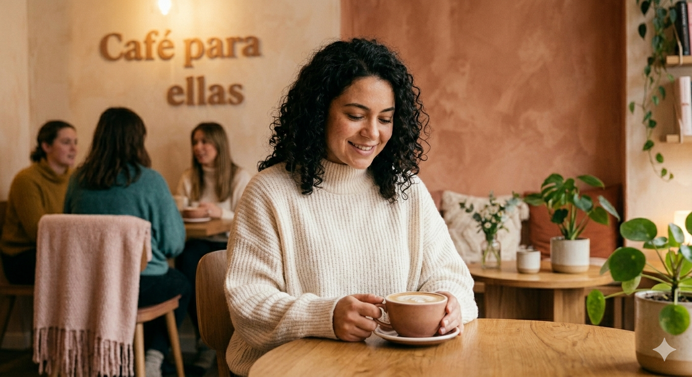
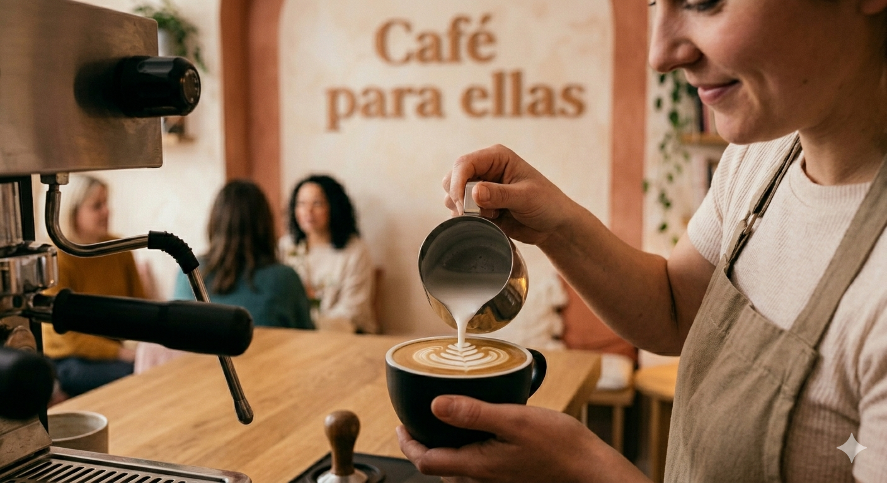

SOBRE NOSOTRAS

En el corazón de nuestra historia late un puente inquebrantable entre las montañas de Colombia y la cultura del café en España. Lo que comenzó como una pasión familiar se ha transformado en un tributo vivo a la tierra y, sobre todo, al liderazgo femenino. Creemos firmemente que el café tiene rostro de mujer: desde las manos expertas de las caficultoras colombianas que recolectan cada cereza con una delicadeza inigualable, hasta la visión emprendedora que nos permite tostar y servir este tesoro en tierras españolas. Para nosotros, cada grano es un símbolo de empoderamiento y resiliencia. Al elegir nuestro café, no solo disfrutas de un perfil de taza excepcional con notas vibrantes y equilibradas; también te haces parte de una cadena de valor que honra el trabajo de las mujeres que son el pilar de sus comunidades rurales. Nuestra misión es simple pero profunda: unir la tradición ancestral del campo colombiano con la vanguardia del tostado artesanal, ofreciéndote una herencia de sabor que celebra la fuerza, el cuidado y la excelencia en cada sorbo.


Tu refugio de calma
En Cafe para ellas, hemos creado un santuario diseñado para abrazar tus emociones y desconectar
del ruido exterior. Un espacio seguro de luces cálidas y rincones íntimos donde puedes ser tú misma,
recuperar tu centro y transformar un simple café en un momento de paz absoluto.